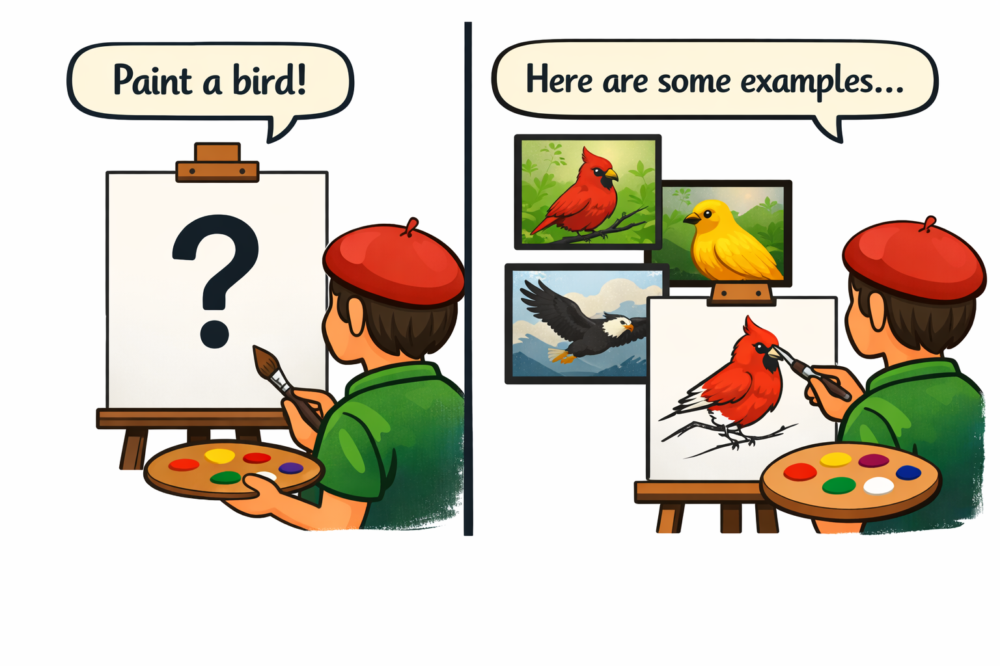
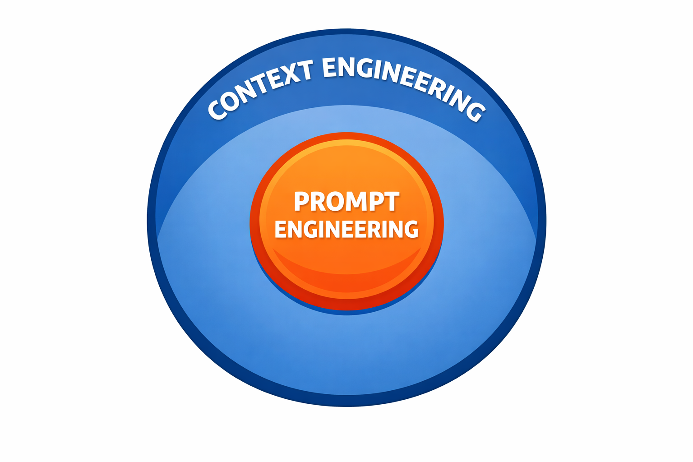

class: center, middle, inverse count: false # In-Context Learning ## and the Limits of Prompting --- # What Is In-Context Learning? You can teach an LLM a new pattern just by **showing it examples in the prompt.** The model's weights don't change — no retraining, no fine-tuning. It "learns" the pattern from the examples in context and applies it to new inputs. This is called **in-context learning**, and it's one of the most practical tools you have for controlling LLM behavior. ??? Students may already do this intuitively. Understanding it as a named mechanism helps them use it deliberately. --- # Zero-Shot Prompting Give the instruction with **no examples:** ``` Classify the sentiment of this review as positive, negative, or neutral: "The food was decent but the service was painfully slow." ``` -- The model can handle this from pre-training. But it might format the answer differently than you want, or be **inconsistent** across inputs. ??? Zero-shot works but has consistency problems. Few-shot solves that. --- # Few-Shot Prompting Give examples first, then the task: .small[ ``` Classify the sentiment of each review: Review: "Absolutely loved it, best meal I've had in years!" Sentiment: positive Review: "It was fine. Nothing special." Sentiment: neutral Review: "The food was decent but the service was painfully slow." Sentiment: ``` ] -- The model matches your **exact format** and **classification style** — learned from the examples alone. ??? The side-by-side with zero-shot makes the difference concrete. --- # Live Demo: Zero-Shot vs Few-Shot .small-code[ ```python def classify_zero_shot(review): response = client.messages.create( model="claude-haiku-4-5-20251001", max_tokens=50, temperature=0, * messages=[{"role": "user", * "content": f'Classify as positive, negative, or neutral:\n\n"{review}"'}] ) return response.content[0].text.strip() def classify_few_shot(review): * prompt = """Classify as exactly one word: positive, negative, or neutral. * * Review: "Loved it, best meal in years!" * Sentiment: positive * * Review: "It was fine." * Sentiment: neutral * ... * """ response = client.messages.create( model="claude-haiku-4-5-20251001", max_tokens=10, temperature=0, messages=[{"role": "user", "content": prompt + f'\nReview: "{review}"\nSentiment:'}] ) return response.content[0].text.strip() ``` ] ??? Run zero_vs_few_shot.py. Have students look at the output table. Zero-shot may return full sentences like "The sentiment is negative." Few-shot returns exactly one word. The format consistency is the point. --- # Zero-Shot vs. Few-Shot .split-left[ ### Zero-Shot - May return full sentences - Inconsistent formatting - Often correct, but **unpredictable output structure** ### Few-Shot - Returns exactly one word - Consistent across all inputs - The examples **taught the model your format** ] .split-right[ <p></p> .callout[For agents, output format matters as much as correctness. If your code parses the response, few-shot is almost always worth the token cost.] ] <div class="clear"></div> ??? [1 min] This is the practical takeaway. Agents parse LLM output — they need predictable formatting. Few-shot gives you that. --- # In-Context Learning for Agents You can teach your agent new behaviors by including examples in the prompt: - Teach a **new tool format** by showing example tool calls in the system prompt - Establish a **coding style** by including example code - Define **output formats** by demonstrating them - Correct **specific behaviors** by showing right alongside wrong The cost: **every example consumes tokens.** Three examples at 50 tokens each = 150 tokens permanently in your system prompt. .info[Few-shot prompting is one of the most reliable techniques for agent behavior. Use it when consistency matters more than token efficiency.] ??? Connect few-shot to agent development. The token cost trade-off connects to context engineering. --- # Limits of Prompting: Context Rot As the context grows, the model's ability to attend to relevant information **degrades.** -- For a simple chat, this might mean the model forgets something from 30 messages ago. -- For an agent running in a loop, it's worse: .small[ - Agent reads a file → **500 tokens** added to context - Agent reads another file → **500 more tokens** - Agent edits a file → old content AND new content in context - Agent reads the file again to verify → **another 500 tokens** - After 10 tool calls: **5,000+ tokens** of tool results that are no longer relevant ] -- .warning[The context fills with **historical** information that was useful at the time but is now noise. The model's attention is spread thinner and thinner.] ??? [3 min] This is the most important limit for this course. The file-reading example makes the problem concrete. --- # Other Limits of Prompting **Conflicting instructions** — As system prompts grow, instructions subtly contradict each other. "Be concise" vs. "Always explain your reasoning." The model doesn't resolve contradictions — it averages them, producing inconsistent behavior. **Single-context constraint** — Everything must fit in one context window. You can't split a task across multiple contexts and maintain coherence. .info[Multi-agent systems work around the single-context constraint — that's a later topic.] ??? Two more limits beyond context rot. Students will encounter conflicting instructions when building complex system prompts. --- # Prompt Engineering vs. Context Engineering .split-left[ > **Prompt engineering** asks: "How do I write a better prompt?" > > **Context engineering** asks: "How do I curate the entire context — system prompt, conversation history, tool results, external data — so the model has exactly what it needs and nothing it doesn't?" For agents, the system prompt might be **5%** of the total context. The other **95%** is conversation history, tool results, and accumulated data. ] .split-right[ <p></p> ] <div class="clear"></div> ??? The 5%/95% framing makes the subset relationship concrete. --- # The Context Engineering Mindset Different questions to ask: - Not "how do I phrase this instruction?" but **"what information does the model need right now?"** - Not "how do I make the prompt longer?" but **"how do I keep the context small and high-signal?"** - Not "why didn't it follow my instruction?" but **"what else is in the context competing for attention?"** ??? Each question reframes a common instinct. The third is especially useful for debugging. --- # What Context Curation Looks Like .split-left[ ### Removing stale information - Drop old tool results the agent no longer needs - Summarize long conversation history into a shorter recap - Truncate or compact messages that have been superseded ### Injecting relevant information - Retrieve documents based on the current query - Add domain-specific data the model wouldn't otherwise have - Insert examples that match the current task type ] .split-right[ ### Prioritizing placement - Beginning and end of context get more attention than the middle - Put critical instructions at the start - Put the current task at the end ### Controlling what stays - Keep recent messages verbatim - Summarize older exchanges - Remove duplicate information (e.g., file read twice) ] <div class="clear"></div> ??? Concrete examples of context curation. Each of these becomes a technique in later modules. --- # Context Engineering Defined > **Context engineering — curating the smallest possible set of high-signal tokens — is the central discipline of agent development.** Everything we build from here — context management, RAG, memory, skills — is a context engineering technique. .callout[The entire context matters — system prompt, examples, conversation history, tool results — not just the user's prompt.] ??? This is the thesis statement of the course. --- # Key Takeaways **1. In-context learning** — teach new patterns with examples alone, no training or fine-tuning **2. Context degrades as it grows** — every tool call adds tokens, stale information accumulates, quality drops **3. Context engineering > prompt engineering** — the prompt is 5% of the context; the other 95% determines agent quality --- # Module 3 Complete - **Lecture 3.1** — anatomy of an API call, messages, responses - **Lecture 3.2** — the model landscape, tiers, costs, local models - **Lecture 3.3** — temperature, sampling, output control - **Lecture 3.4** — in-context learning, context rot, context engineering Next: context windows, prompt and context engineering techniques, then building. ??? Recap of module topics.